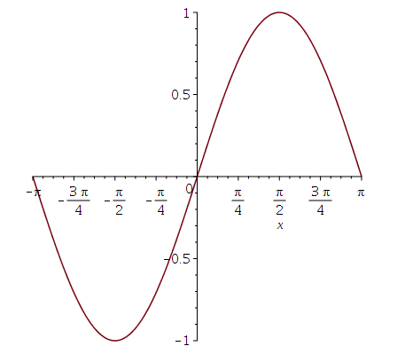
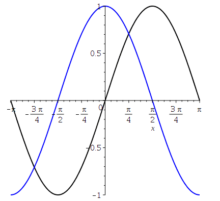

You can use Maple commands to define a variable with a code of the form
$variable_name = maple(" Maple code ");
You can have a full Maple program as Maple code. The last statement of the code returns the value given to the variable.
This is obviously not an exhaustive list of Maple functions but they have been useful in authoring questions. For a more complete introduction to Maple, please consult the website .
Example:
diff(f(x),x) computes the derivative of the function f(x) with respect to the variable x.
For instance
$b = maple("diff(cos(x) * sin(x),x);");
gives -sin(x)^2+cos(x)^2.
Example:
int(f(x),x) computes the integral of the function f(x) with respect to the variable x.
$a = 5;
$b = maple("int(ln(x+($a)),x);");
gives ln(x+5)*(x+5)-x-5. Maple does not add a constant of integration.
Example:
int(f(x), x=a..b) computes the definite integral of the function f(x) with respect to the variable x on the interval \([a,b]\).
$a = 5;
$b = maple("int(ln(x+($a)),x=-1..10);");
gives -11-8*ln(2)+15*ln(3)+15*ln(5).
Example:
simplify(expression) simplify algebraically the given expression.
$a = 9; $b = 16; $c = 3; $d = 4;
$e = maple("simplify( ($a*x^2 - ($b))/($c*x + ($d)) );");
gives 3*x - 4.
We give only a couple of examples on how to draw the graph of a function. There are too many options to plot graphs in Maple to be able to cover all of them in our short survey. The procedure to call Maple from Möbius to draw graphs or figures is always the same. You have to use the command plotmaple in Möbius.
Example:
The following code is used to draw the graph of \(\sin(x)\) for \(x\) between \(-\pi\) and \(\pi\).
$myplot=plotmaple("plot(sin(x), x=-Pi..Pi), plotdevice='gif',
plotoptions='height=250, width=250'");
It suffices to insert the variable $myplot in your text to get the graph displayed at that location.
Example:
plot(f(x),x=a..b) plots the graph of the function f(x) on the interval \( a \leq x \leq b\).
$A = plotmaple("plot(sin(x),x=-Pi..Pi);");
gives the figure below at the location of $A in the text.

Example:
plot([f1(x),f2(x), ..., fN(x)], x=a..b, color=[color1,color2, ...,colorN], thickness=''thickness'') plots the graphs of the functions f1(x), f2(x),...,fN(x) on the interval \(a \leq x \leq b\). Each graph gets its own colour. It is also possible to modify the thickness of the line used to draw the graphs.
$A = plotmaple("plot([sin(x),cos(x)], x=-Pi..Pi, color=[black,blue],thickness=2);");
gives the figure below at the location of $A in the text.

Example:
You can create an animation if you want the graph of a function to evolve when the value of a parameter varies. Suppose that you would like to see how \(\sin(ax)\) evolves when \(a\) increases from 1 to 4. The code would look like this one.
$myanimation = plotmaple("plots[animate](sin(a*x), x=-Pi..Pi, a=1..4),
plotdevice='gif', plotoptions='height=200, width=200'");
The graph of \(\sin(ax)\) will evolve continuously as \(a\) goes from 1 to 4, and this will be repeated for ever.
If you want to write a mathematical formula in your Question area or in the section Feedback, then you may use \(\LaTeX\) with the following convention: expressions between dollar signs $ must be written between \( and \), expressions between double dollar signs $$ must be written between \[ and \]. However, you may also ask Maple to format your mathematical expressions in \(\LaTeX\) or MathML. Here are a few examples.
Example:
How can you nicely format the result of a computation done by Maple? Maple has a command to translate mathematical expressions in MathML. MathML[ExportPresentation](Maple code) writes the result of the Maple code in MathML format.
The code
$m = maple("MathML[ExportPresentation](x^2-3*x+2)");
generates the MathML code that translates into \(x^2 - 3 x +2\) where you introduce $m in your text. The code
$a = 5;
$b = maple("MathML[ExportPresentation](exp($a*x)/x)");
gives the MathMl code to produce \(\displaystyle \frac{e^{5x}}{x}\).
Example:
If you want to introduce the result of a computation done by Maple into a \(\LaTeX\) expression, then you should use the command latex in Maple.
The code
$myLaTeX = maple("latex(x^2-3*x+2)");
generates the \(\LaTeX\) code to produce {x}^{2}-3\,x+2.
Example:
if (condition1) then commands1; elif (condition2) then commands2; else commands3; fi;"); execute the set of commands associated to the condition that is satisfied.
$a = 2;
$b = maple("if ($a=1) then 1; elif ($a=2) then 2; else 3; fi;");
gives 2.
Example:
You may want to limit the number of call to Maple because it may slow down the loading of a question. Though, this seems to be no longer an issue. Nevertheless, avoid writing code like this one.
$a1 = 1; $a2 = maple("$a1+1"); $a3 = maple("$a2+1");
$a4 = maple("$a3+1"); $a5 = maple("$a4+1"); $a6 = maple("$a5+1");
$a7 = maple("$a6+1"); $a8 = maple("$a7+1"); $a9 = maple("$a8+1");
$a10 = maple("$a9+1"); $a11 = maple("$a10+1"); ...
$a160 = maple("$a159+1");
when you can simply write
$B = maple("A:=Vector(160); a:=0; for j from 1 to 160 do a := a+1; A[j] := a;
end do; map(rcurry(convert,string),convert(A,list))");
$a1 = switch(0,$B);
$a2 = switch(1,$B);
$a3 = switch(2,$B);
$a4 = switch(3,$B);
...
$a160 = switch(159,$B);
to save 158 calls to Maple. The command switch() gives you access to the elements of a list of strings like $B.
Example:
Here is another example of the use of the Maple command map(rcurry(convert,string),convert( ,list)).
$a=1; $h=0.5; $c=5;
$N = maple("A :=Vector(15); for j from 1 to 7 do A[j]:= $a+(j-1)*\$h); end do;
for j from 8 to 14 do A[j]:= round(3*($c)+30/(($c)+j-8)); end do;
A[15]:=($h)*(A[8]+2*add(A[k],k=9..13)+A[14])/2;
map(rcurry(convert,string),convert(A,list))");
$R=switch(14,$N);
The value of $R in the code above is 56.75; the value of A[15]. It is also possible to decompose the vector A into its operands using the command
map(rcurry(convert,string),map(op,convert(A ,list)));
If you had used this command in the previous code, then switch(14,$N)} would have given 5675000000 and switch(15,$N)} would have given -8 because A[15] = 5675000000 E-8. There is two operands. Note that A[j] for 0 ≤ j < 14 are integers and so represent only one operand each.
Example:
The following example deal with the product of matrices.
$N = maple("f:=(x,y)->evalf(sin(x+y));
M:=Matrix(2,3,[[f(1,1),f(1,2),f(1,3)],[f(2,1),f(2,2),f(2,3)]]);
map(rcurry(convert,string),convert(M,list))");
$m23 = switch(3*(2-1)+(3-1), $N);
In the previous code, the command convert(M,list) converts the matrix M into the list [f(1,1),f(1,2),f(1,3),f(2,1),f(2,2),f(2,3)]. The command map(rcurry(convert,string),...) converts each numerical element of the list into a string of characters that can be handled by switch(). $m23 is the element in the second row and third column.
To be honest, the previous code could be replaced by
$N = maple("f:=(x,y)->evalf(sin(x+y));
M:=Matrix(2,3,[[f(1,1),f(1,2),f(1,3)],[f(2,1),f(2,2),f(2,3)]]); M;");
$m23 = maple("$N[2,3];");
which is simpler and probably as fast as the previous one since only two calls to maple are used.
Example:
Suppose that you have a complete graph with vertices A, B, C, D and E. You want to randomly select a path that links all the vertices without going to the same vertex twice. To do that, you want to list the edges that go from the first selected vertex to the last one. The following code do just that.
$vertices = "ABCDE";
$nbr = 5;
$edges = maple("with(combinat): randomize(): L:=String($vertices):
LL:=[seq(L[i],i=1..$nbr)]: LLL:=randperm(LL):
[seq(cat(LLL[i],LLL[i+1]),i=1..$nbr-1),cat(LLL[1],LLL[$nbr])];"];
$edge1 = switch(0,$edges);
$edge2 = switch(1,$edges);
$edge3 = switch(2,$edges);
$edge4 = switch(4,$edges);
$sum = switch(4,$edges);
The result of the maple call will be a list of edges like ["AC","CE","EB","BD","AD"]. Then we use the switch command to retrieve each edges.
Example:
If, in the previous example, you would like to randomly select only three of the vertices to create the path, then you will use a code similar to the following one.
$vertices = "ABCDE";
$nbr = 5;
$nbr1 = 3;
$edges = maple("with(combinat): randomize(): L:=String($vertices):
LL:=[seq(L[i],i=1..$nbr)]: LLL:=randperm(randcomb(LL,$nbr1)):
[seq(cat(LLL[i],LLL[i+1]),i=1..$nbr1-1),cat(LLL[1],LLL[$nbr1]) ];"];
$edge1 = switch(0,$edges);
$edge2 = switch(1,$edges);
$sum = switch(3,$edges);
In the previous code, we have used randperm(randcomb(LL,$nbr1)) because randcomb() always give a combination in increasing order. We use randperm() to shuffle these combinations.
Example:
Suppose that the variable $exp produced
in the section Algorithm of your question holds a
proposition of the form (($p1) $o1 ($p2))
$o2 ($p3), where $o1
and $o2 are two connectives
(e.g. ∧, ∨ ¬, → or ↔),
and $p1, $p2
and $p3 are
three simple
propositions. All of the
propositions are formed from the atomic propositions \(P\), \(Q\)
and \(R\).
You give below the example of a code that could be used to generate the expression $exp.
#randomly choose a first binary operation $ro1 = rint(2); # op code for maple $o1 = switch($ro1, "&and", "&or"); # op code for latex $o1tex = switch($ro1, "\land", "\lor"); #randomly choose a second binary operation $ro2 = rint(2); # op code for maple $o2 = switch($ro2, "&implies", "&or"); # op code for latex $o2tex = switch($ro2, "\to", "\lor"); # randomly choose unary operations $rp1 = rint(2); $rp2 = rint(2); $rp3 = rint(2); # negation code for maple $p1 = switch($rp1, "¬ P", "P"); $p2 = switch($rp2, "¬ Q", "Q"); $p3 = switch($rp3, "¬ R", "R"); # negation code for latex $p1tex = switch($rp1, "\neg P", "P"); $p2tex = switch($rp2, "\neg Q", "Q"); $p3tex = switch($rp3, "\neg R", "R"); # expression for maple $exp = "(($p1) $o1 ($p2)) $o2 ($p3)"; # expression for latex $exptex= "($p1tex $o1tex $p2tex) $o2tex $p3tex";
The expression $exptex contains the \(\LaTeX\) code to write the expression $exp in your question and in the section Feedback.
Suppose that you would like students to produce the truth table for the proposition $exp that also includes p1, p2 and p3. Namely, you would like students to complete the following truth table.
| P | Q | R | p1D | p2D | p3D | expD |
|---|---|---|---|---|---|---|
| \(T\) | \(T\) | \(T\) | \(A_{1,1}\) | \(A_{1,2}\) | \(A_{1,3}\) | \(A_{1,4}\) |
| \(T\) | \(T\) | \(F\) | \(A_{2,1}\) | \(A_{2,2}\) | \(A_{2,3}\) | \(A_{2,4}\) |
| \(T\) | \(F\) | \(T\) | \(A_{3,1}\) | \(A_{3,2}\) | \(A_{3,3}\) | \(A_{3,4}\) |
| \(T\) | \(F\) | \(F\) | \(A_{4,1}\) | \(A_{4,2}\) | \(A_{4,3}\) | \(A_{4,4}\) |
| \(F\) | \(T\) | \(T\) | \(A_{5,1}\) | \(A_{5,2}\) | \(A_{5,3}\) | \(A_{5,4}\) |
| \(F\) | \(T\) | \(F\) | \(A_{6,1}\) | \(A_{6,2}\) | \(A_{6,3}\) | \(A_{6,4}\) |
| \(F\) | \(F\) | \(T\) | \(A_{7,1}\) | \(A_{7,2}\) | \(A_{7,3}\) | \(A_{7,4}\) |
| \(F\) | \(F\) | \(F\) | \(A_{8,1}\) | \(A_{8,2}\) | \(A_{8,3}\) | \(A_{8,4}\) |
where \( p1D\), \(p2D\), \(p3D\) and \(expD\) are replaced by the \(\LaTeX\) expressions for $p1, $p2, $p3 and $exp respectively. Students must submit the matrix
\[ A = \begin{pmatrix} A_{1,1} & A_{1,2} & \ldots \\ A_{2,1} & A_{2,2} & \ldots \\ \vdots & \vdots & \ddots \end{pmatrix}\]where the entries of the matrix are \(T\) or \(F\). You can find an example of a Maple Graded question whose answer is a matrix in the section Matrix Format of the site .
The section Algorithm will contain the following instructions.
$exp = "$p1 $o1 $p2 $o2 $p3";
$truthtable = maple("with(Logic): with(LinearAlgebra):
T1:=TruthTable( $p1, [P,Q,R], output=Matrix);
T2:=TruthTable( $p2, [P,Q,R], output=Matrix);
T3:=TruthTable( $p3, [P,Q,R], output=Matrix);
T4:=TruthTable( $exp, [P,Q,R], output=Matrix);
T5:=Matrix([Column(T1,4), Column(T2,4),Column(T3,4),Column(T4,4)]);
T6:=ArrayTools:-FlipDimension(T5,1);
f:=(i,j) -> if ( T6[i][j] ) then T else F fi;
Matrix(8,4,f); ");
$truthtableD = maple("printf(MathML[ExportPresentation]( $truthtable ));");
T1, T2, T3 and T4 hold the truth tables for p1, p2, p3 and $exp respectively. In these truth tables, 1 means true and 0 means false. T5 is a (8 × 4)-matrix that contains the last column of T1, T2, T3 and T4; the columns for \(P\), \(Q\) and \(R\) have been discarded. Since the order of the true assignments in the truth tables produced by Maple (i.e. \(FFF\), \(FFT\), ... ) is the opposite of the order of the true assignments used at the University of Ottawa (i.e. \(TTT\), \(TTF\), ...), we use the command T6:=ArrayTools:-FlipDimension(T5,1); to inverse the order of the rows in the matrix T5. The last part of the code for $truthtable replaces all the ones in T6 by \(T\) and the zeros by \(F\).
The variable $truthtableD is the MathML presentation of the matrix $truthtable that can be used in the section Feedback of the question.
Example:
Suppose that you want to ask students to determine if a given proposition is a contradiction and, if it is not, to identify the truth assignments that make the given proposition true. We assume that your proposition has been randomly generated in the section Algorithm of the question, and that it is stored in the variable $esp . The question would have two answer boxes: one true or false box where the student will answer if $exp is a contradiction, and a multi-selection box where students have to select the true assignments if any that make $exp true.
Suppose that $exp has three atomic propositions: \(P\), \(Q\) and \(R\). To keep with the tradition at the University of Ottawa, the multi-selection box will have the elements:
| Number | P | Q | R |
|---|---|---|---|
| 1 | \(T\) | \(T\) | \(T\) |
| 2 | \(T\) | \(T\) | \(F\) |
| 3 | \(T\) | \(F\) | \(T\) |
| 4 | \(T\) | \(F\) | \(F\) |
| 5 | \(F\) | \(T\) | \(T\) |
| 6 | \(F\) | \(T\) | \(F\) |
| 7 | \(F\) | \(F\) | \(T\) |
| 8 | \(F\) | \(F\) | \(F\) |
Maple uses the opposite order (i.e. \(FFF\), \(FFT\), ... ) when it generates truth tables.
The section Algorithm of the question will contain the following code.
$truthtable = maple("with(Logic): with(LinearAlgebra): T1:=TruthTable( $exp, [P,Q,R],
form=MOD2, output=Matrix); T2:= T1[1..8,4]; ArrayTools[FlipDimension](T2,1);");
$ans2 = maple("with(LinearAlgebra): with(ListTools): T3:= $truthtable;
S := SearchAll(1, T3); if ( numelems([S]) > 0 ) then S; else 9; end if; ");
$ans1=if(eq($ans2,9), 2, 1);
$truthtableD = maple("with(LinearAlgebra): T3 := $truthtable;
f:= i -> if ( T3[i] = 1 ) then T else F fi;
T4 := Vector(8,f); map(rcurry(convert,string),convert(T4,list));");
$rowc1=switch(0,$truthtableD);
$rowc2=switch(1,$truthtableD);
$rowc3=switch(2,$truthtableD);
$rowc4=switch(3,$truthtableD);
$rowc5=switch(4,$truthtableD);
$rowc6=switch(5,$truthtableD);
$rowc7=switch(6,$truthtableD);
$rowc8=switch(7,$truthtableD);
$statement=if(eq($ans1,2), "the compound proposition is a contradiction since for every truth assignment the proposition is false.",
"the compound proposition is not a contradiction since there exists a truth assignment where the proposition is true.");
In the definition of $truthtable, T2 is the last column of the truth table for $exp with the value 1 if the statement is true and 0 if it is false. We have to use ArrayTools[FlipDimension](T2,1); to reverse the order of the elements in T2 to match the order of the true assignments used at the University of Ottawa. $ans2 will contain the numbers of the true assignments that make $exp true if any. $ans will be 2 (not a contradiction) if $ans1 is not empty and 1 (a contradiction) otherwise.
$truthtableD , $rowc1 , $rowc2 , ..., $rowc8 and $statement are used in the section Feedback of the question. To be more precise, the code for the section Feedback will look like this.
<center>
<table class="UOtable">
<tr>
<th> \(P\) </th>
<th> \(Q\) </th>
<th> \(R\) </th>
<th> \(&extex\) </th>
</tr>
<tr>
<td> \(T\) </td>
<td> \(T\) </td>
<td> \(T\) </td>
<td> \($row1) </td>
</tr>
<tr>
<td> \(T\) </td>
<td> \(T\) </td>
<td> \(F\) </td>
<td> \($row2\) </td>
</tr>
<tr>
.
.
.
</tr>
<tr>
<td> \(F\) </td>
<td> \(F\) </td>
<td> \(F\) </td>
<td> \($row8\) </td>
</tr>
<table>
</center>
<p> Based on the truth table above, $statement</p>
&extex in the table above is the \(\LaTeX\) version of the statement &exp that you will have generated in the section Algorithm.